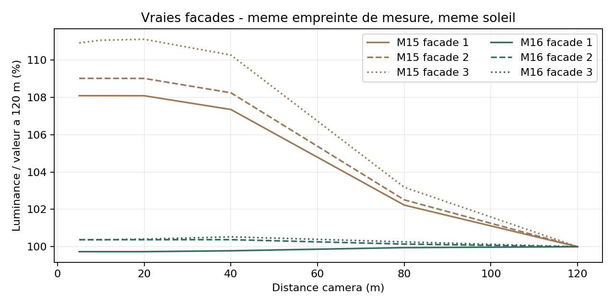
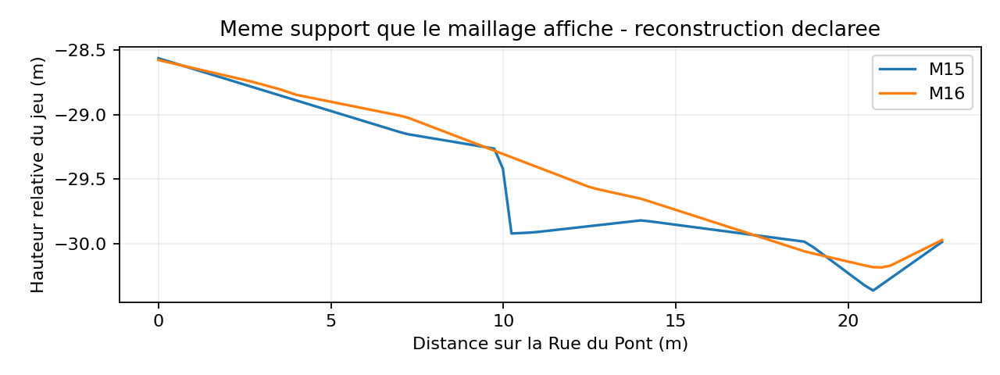
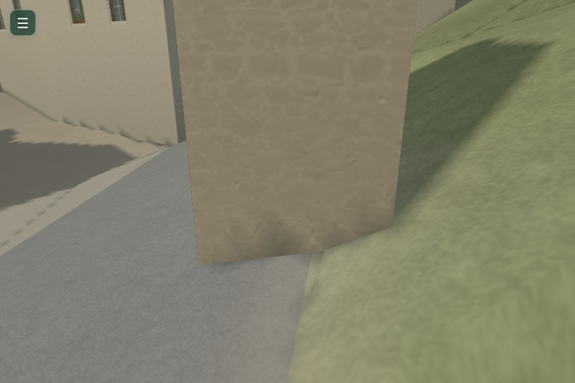

ENDLESS EARTH · MISSION 16 · PR BROUILLON
Un même monde, du village à la rivière
Captures du véritable moteur, références M15/M16 et parcours enregistrés. Rendu logiciel SwiftShader ; aucun FPS matériel revendiqué. Rapport complet et limites.
M15 · avantM16 · après
Inspections de caméra séparées, mêmes réglages par paire. Les vues du personnage sont au repos ; marche et course sont visibles dans les films.
Ce qui a été mesuré
Façades : 108 vues, de 5 à 120 m, trois profils. Le FOV du test quantitatif garde le même morceau de mur à la même taille pour isoler le fondu de matière.


La chaussée locale est une reconstruction entre altitudes existantes. Toutes les routes ne sont pas certifiées pour une future voiture ; les profils problématiques restent signalés.
Promenades et observations natives
Aller-retour clavier · 229,8 m
Une seule pose initiale sur la rue voisine, arrêts, autre rive, course au retour. Source a33e05a, avant la correction des pas du pont.Après rechargement · garde-corps
Inspection séparée avec commandes natives, près du garde-corps et sur l’autre rive.Traversée sonore finale · 114,7 m
163 sons de pas réels, même phase métrique que la marche ; altitude acoustique du tablier corrigée.Approche Mission 15
L’approche réussit avec glissement latéral ; ce film ne prétend pas montrer un pont toujours bloqué.Approche caméra · avant
Inspection de caméra 120 → 5 m ; joueur immobile, FOV fixe, pas une promenade clavier.Approche caméra · après
Même inspection, vrai rendu, aucun remplacement d’image.Eau Mission 15
Observation native séparée depuis le pont.Eau, soir, nuit et pluie
Observation continue, sélecteurs d’heure/météo du jeu, vrai son après limiteur.Dernier raccord contrôlé
Un pied de mur voisin est prolongé de 20,9 cm jusqu’au terrain corrigé, sans déplacer l’emprise ou les ouvertures.
